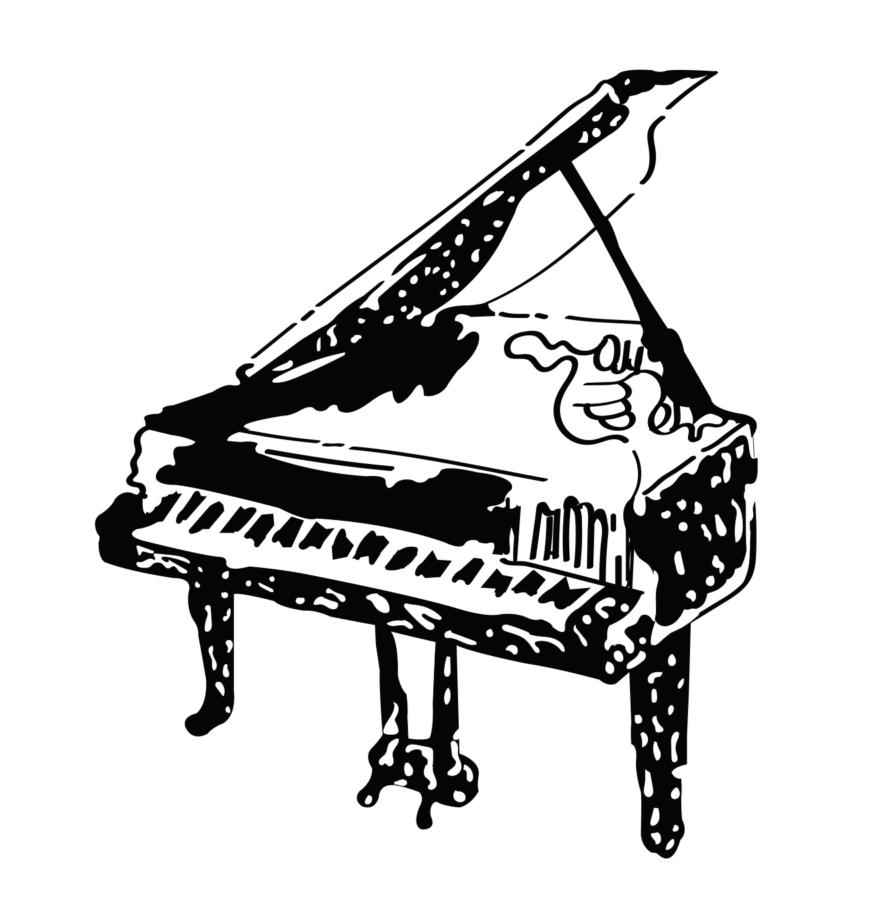

Afterword
Expression, fluency & serious fun

click me!
After reading Beginner To Composer In 14 Days people often assume I’m against the more conventional forms of musical education, when in fact I teach and examine music grades, and I’m the first to wax lyrical about their value. I do however recognise their limitations. The purpose of the exam route is to promote steady progression in technical ability, performance and theoretical understanding. Improvisation seldom comes into it, with the exception of a few jazz syllabuses; but even then students commonly memorise an ‘improv’ in inverted commas way ahead of their exam. Composition never comes into it. It’s simply not what these regular kinds of exams are designed to do.
For a student to receive a rounded musical education they can’t lean solely on doing grades. That would be like learning French, but only how to read and speak other people’s words. It’s an approach that renders you passive in the world, unable to construct a single sentence of your own and contribute something of your own experience. To me, that’s missing out. Music is a language, a medium to communicate and share a glimpse of what’s inside of us. What a shame to only be able to receive, when each of us has something beautiful and unique we could express.
If that romantic notion doesn’t stir you then perhaps this will. Learning to improvise and compose will significantly improve your musical fluency. I define musical fluency as the ease and speed at which someone reads, writes and plays musical notation; their grasp of music as a language, with grammar-like structures and a syntax of its very own. It’s common sense that someone who writes as well as reads and plays, is going to have a deeper understanding of their instrument. One skill cross-pollinates the other, strengthening the whole.
To close I’d like to recap my musings from the very start of this book: the vital importance of curiosity in learning and progressing in a field. I used to think it was just me that needed creative freedom in order to ‘stick at things’, a quirk of my personality (a hint of authority complex perhaps). Today, after more than a decade teaching students of all ages, levels and dispositions I can confidently say we all benefit from creative freedom. The evidence is clear, it’s the personal, specialised enquiry into music that stimulates one’s appetite for it. ‘How can my opening bar feel more like that film scene I love?’ ‘How can my improv sound a bit more like Anna?’ These are the idiosyncratic kinds of questions that exist outside of organised syllabuses. The questions that tempt students to sit a little longer at the keys, and to raise that most important of bars, the one they set for themselves.
So there you have it. While Beginner To Composer In 14 Days is a lot of fun, it’s also the manifestation of a man on a mission. For students, I hope it empowers you not only to play the greats but to create something great too; and to begin a dialogue with your instrument, a supportive and revelatory conversation that will last a lifetime. For educators, I hope Beginner To Composer In 14 Days becomes a trusted resource, something you can lean on to help you deliver a holistic, humanistic musical education. Whoever you are, I hope you’ve enjoyed hanging out. Thank you for jamming with me.